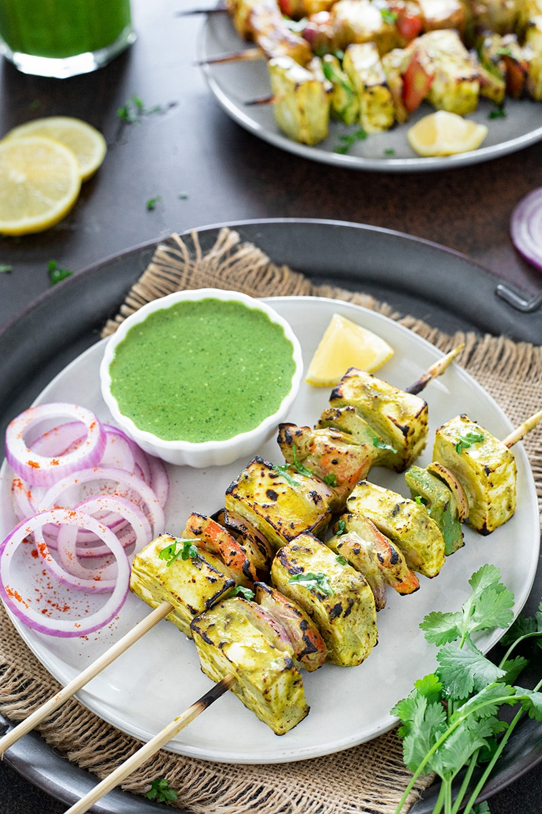

|
|
Cooking Instructions
- Prepare the Marinade:
- In a blender, add fresh coriander, mint leaves, green chilies, ginger, and garlic.
- Blend to form a smooth paste.
- In a bowl, mix the paste with thick curd, roasted besan, kasuri methi, lemon juice, mustard oil, turmeric, cumin powder, chaat masala, garam masala, and salt.
- Marinate the Paneer:
- Add the paneer cubes to the marinade and mix gently to coat the paneer pieces evenly.
- Cover and let it marinate for at least 30 minutes in the refrigerator.
- Grill or Fry the Paneer:
- Heat oil in a pan or on a grill.
- Cook the marinated paneer on medium heat, turning occasionally, until all sides are golden and slightly charred.
- Garnishing:
- Garnish with lemon wedges, onion rings, and fresh coriander leaves.
Serve with: Green chutney, naan, or roti.
|

|
|
|